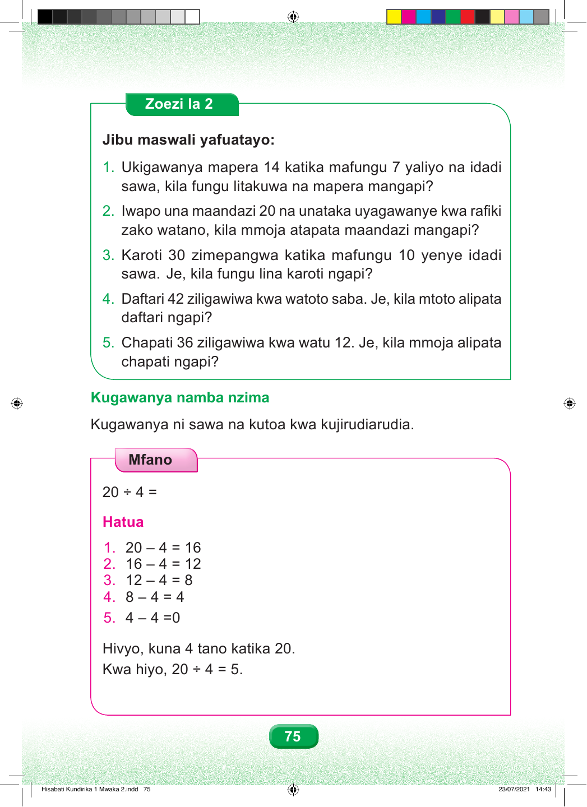

Zoezi la Pili Jibu maswali yafuatayo. Swali namba moja. Ukigawanya mapera kumi na manne katika mafungu saba yaliyo na idadi sawa, kila fungu litakuwa na mapera mangapi? Swali namba mbili. Iwapo una maandazi ishirini na unataka kuyagawa kwa rafiki zako watano, kila mmoja atapata maandazi mangapi? Swali namba tatu. Karoti thelathini zimepangwa katika mafungu kumi yenye idadi sawa. Je, kila fungu lina karoti ngapi? Swali namba nne. Daftari arobaini na mbili ziligawiwa kwa watoto saba. Je, kila mtoto alipata daftari ngapi? Swali namba tano. Chapati thelathini na sita ziligawiwa kwa watu kumi na wawili. Je, kila mmoja alipata chapati ngapi? Kugawanya namba nzima Kugawanya ni sawa na kutoa kwa kujirudiarudia. Mfano Ishirini kugawanya nne, sawa sawa na ngapi? Hatua. Toa nne kwa kujirudiarudia hadi ufikie sifuri. Hesabu idadi ya hatua za kutoa. Hatua ya kwanza. Ishirini kutoa nne, sawa sawa na kumi na sita. Hatua ya pili. Kumi na sita kutoa nne, sawa sawa na kumi na mbili. Hatua ya tatu. Kumi na mbili kutoa nne, sawa sawa na nane. Hatua ya nne. Nane kutoa nne, sawa sawa na nne. Hatua ya tano. Nne kutoa nne, sawa sawa na sifuri. Tumetoa nne mara tano hadi kufikia sifuri. Hivyo, kuna makundi matano ya vitu vinne katika ishirini. Kwa hiyo, ishirini kugawanya nne, sawa sawa na tano. 75 Hisabati Kundirika 1 Mwaka 2.indd 75 23/07/2021 14:43